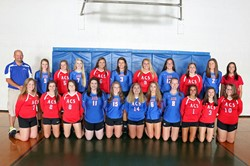
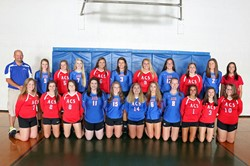
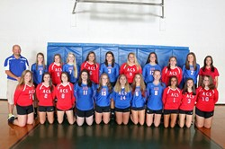

| Home | Volleyball | Career | Pets |

My name is Mattie, I am 14 years old and a Freshman. I am in Deca, and Pep Club. I was born on May 16th, 2002. I am the youngest out of 3 kids. I have a older brother and sister. My brother is 16 and my sister is 29. I play volleyball for the highschool. I have 2 dogs a boxer and a cockapoo. When i grow up i want to own my own store.
I play volleyball on the highschool team and I am number 5. I have played volleyball since i was 10. The first place I played was the YMCA (now the core). I play for the highschool freshmen and JV now. I play backrow which is where you pass the ball instead of hitting in which you do in the front row. Volleyball is a fairly easy sport but requires alot of physical work.
I have a Cockapoo which is a Cocker Spaniel and a Poodle mix that i got for christmas when i was 7. His name is Morgan and he stays inside the house. We also have a Boxer which we adopted from the animal shelter a few years ago. He stays outside and his name is ruger. I also want a golden cocker retriever puppy. besides my dogs form living on a farm i have a horse , cows, and used to have a goat.